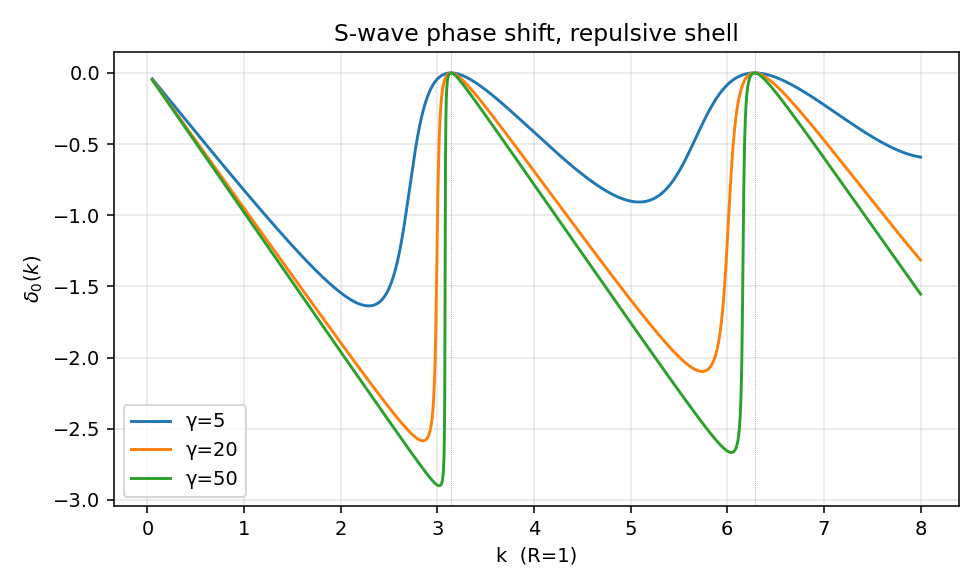
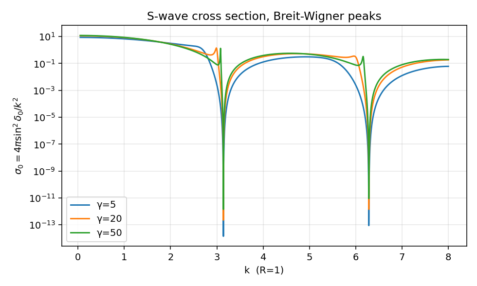
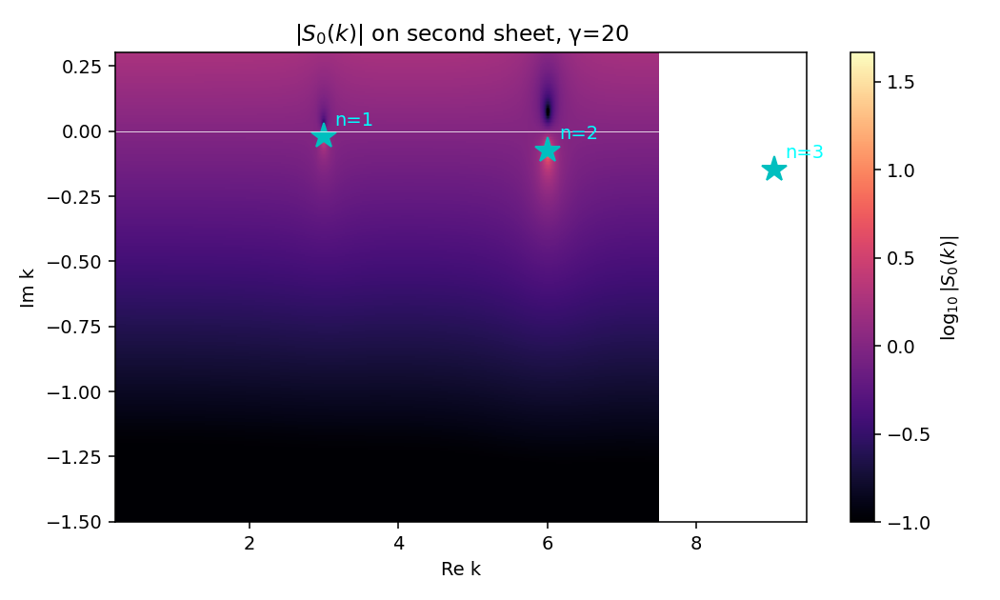
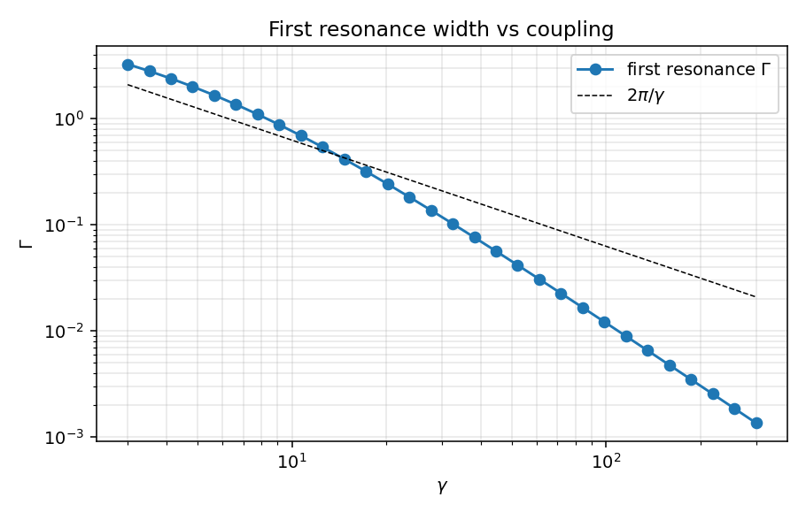

三维 delta 壳层势的散射与共振#
上一篇一维 delta 势把 \(S\) 矩阵、束缚态极点、\(T\) 算符的最小骨架都写在了一行代数里，但那里没有共振——一维 delta 太"简单"，整张复 \(k\) 平面只有一个极点。这一篇换成最小但能产生共振的三维势：一层无限薄的球面壳。它有什么好处？强排斥壳把内部空腔围成一个准盒子，盒子的束缚能级泄漏成共振；调节壳强度 \(\gamma\)，能直接看着 Breit-Wigner 峰从无到有，对应的复极点从远离实轴一步一步靠过来。这正是 01_friedrichsModel.zh.md 中"耦合 \(g(E)\) 强而局部"图像的真实可解版本。
全文取 \(\hbar = 1\)，\(2\mu = 1\)，\(E = k^2\)。只看 s 波 (\(l=0\))。
势的定义#
\(\gamma\) 无量纲，\(R\) 是壳层半径。\(\gamma > 0\) 排斥，\(\gamma < 0\) 吸引。约定 \(\hbar=1, 2\mu=1\) 让势的系数化简为 \(\gamma/R\)（任何文献里见到的"\(2\mu\)"全部吸进 \(\gamma\)）。
s 波径向方程对 \(u(r) = r\psi_0(r)\)：
匹配条件由方程对 \(r\) 在 \([R-\epsilon, R+\epsilon]\) 上积分得到：
- 连续性：\(u(R^+) = u(R^-)\)；
- 导数跳变：\(u'(R^+) - u'(R^-) = (\gamma/R)\, u(R)\)。
s 波相移#
内外区域写成
代入两条匹配条件，从连续性 \(B = A\sin(kR)/\sin(kR+\delta_0)\)，把它代回跳变条件并整理：
左边 \(=\sin(kR-(kR+\delta_0)) = -\sin\delta_0\)，于是
展开 \(\sin(kR+\delta_0)\)，两边除以 \(\cos\delta_0\) 解出
等价地
两条立刻可读出的极限：
- \(\gamma \to 0\)：\(\tan\delta_0 \to 0\)，相移消失，势消失。
- \(\gamma \to \infty\)：\(\tan\delta_0 \to -\sin^2(kR)/[\sin(kR)\cos(kR)] = -\tan(kR)\)，即 \(\delta_0 \to -kR \pmod \pi\)。这正是半径 \(R\) 不可穿透硬球的 s 波相移——壳被打到无穷强就成了硬墙。
中间的有限 \(\gamma\) 就是共振区域。
共振条件#
注意 \(\tan\delta_0\) 的分母 \(kR + \gamma\sin(kR)\cos(kR) = kR + (\gamma/2)\sin(2kR)\)。\(\gamma\) 很大时，它在 \(kR \approx n\pi\)（\(n=1,2,\dots\)）附近近似为 \(kR\)（因为 \(\sin(2n\pi)=0\)），但 \(\gamma\) 很大同时分子 \(\gamma\sin^2(kR)\) 在 \(kR\) 略偏离 \(n\pi\) 时迅速膨胀，所以 \(\tan\delta_0\) 在 \(kR \approx n\pi\) 附近从大正到大负扫一遍——\(\delta_0\) 经过 \(\pi/2\)，这就是 Breit-Wigner 共振的解析特征。
物理图像：\(\gamma \to \infty\) 极限内部是硬墙盒子，s 波束缚能级精确地满足 \(\sin(kR)=0\)，即 \(kR = n\pi\)，\(E_n = (n\pi/R)^2\)。有限 \(\gamma\) 时这些"束缚态"通过壳泄漏出去，变成有限寿命的共振，能量略偏移、获得宽度 \(\Gamma\)。这是 02_Green_operator.zh.md:478 里"束缚态是物理面上的实极点，共振是解析延拓后第二张面上的复极点"那条结论的具体实现。
复 k 平面上的极点#
\(S_0(k) = e^{2i\delta_0(k)} = (1+i\tan\delta_0)/(1-i\tan\delta_0)\)。\(S_0\) 的极点对应 \(\tan\delta_0(k) = -i\)，代入显式表达式得
这是一个超越方程，需要数值求解。物理上对应衰变态的极点位于第二张 Riemann 面，复 \(k\) 平面下半 (\(\mathrm{Im}\,k < 0\))；用 \(E = k^2\) 映回去就是 \(E_R - i\Gamma/2\)，与 01_friedrichsModel.zh.md:551 中的 \(z_*\) 一一对应。
把极点写成 \(k_n = k_n^{\rm R} + i k_n^{\rm I}\) (\(k_n^{\rm I} < 0\))，能量
数值上（见下节脚本，\(\gamma=20\)，\(R=1\)）头三个共振的极点为
实部精确地集中在 \(kR \approx \pi, 2\pi, 3\pi\) 附近——硬球极限的能级位置；虚部小说明共振寿命长，越是低能宽度越窄。
截面#
s 波贡献到弹性总截面
按 05_partial_wave_projection.zh.md:378 的 \(S_l = e^{2i\delta_l}\) 直接给出。在共振附近，把 \(\delta_0(E)\) 写成本底加 Breit-Wigner 部分
代入即得峰高 \(4\pi/k_R^2\) 的 Breit-Wigner 形状。\(\gamma\) 越大，\(\Gamma\) 越小，峰越尖（图见下文）。
数值与图#
完整脚本见 03_delta_shell.py。下面贴关键片段。
def tan_delta0(k, gamma, R=1.0):
s = np.sin(k * R); c = np.cos(k * R)
return -gamma * s * s / (k * R + gamma * s * c)
def s_matrix(k, gamma, R=1.0):
t = tan_delta0(k, gamma, R)
return (1 + 1j * t) / (1 - 1j * t)
def newton_pole(k0, gamma, R=1.0, tol=1e-12, itmax=80):
k = complex(k0)
for _ in range(itmax):
s = np.sin(k * R); c = np.cos(k * R)
f = k * R + gamma * s * c + 1j * gamma * s * s
df = R + gamma * R * (c * c - s * s) + 1j * gamma * 2 * s * c * R
k -= f / df
if abs(f) < tol: return k
return k
第一张图：相移 \(\delta_0(k)\) 对几个 \(\gamma\)。

\(\gamma=5\) 时相移平缓上升；\(\gamma=20\) 时在 \(kR \approx \pi\) 附近出现明显的 \(\pi\) 跳跃；\(\gamma=50\) 时几乎是阶梯。每过一个 \(n\pi\) 相移再增加一个 \(\pi\)，这是 Levinson 定理在共振版本下的体现：每一个准束缚态贡献 \(\pi\) 相位。
第二张图：截面 \(\sigma_0(k) = 4\pi\sin^2\delta_0/k^2\)。

Breit-Wigner 峰直接坐在 \(kR = n\pi\) 附近，峰高 \(\sim 4\pi/(n\pi/R)^2\)；\(\gamma\) 越大峰越窄越尖。\(\gamma=5\) 时基本看不见峰，\(\gamma=50\) 时峰已经收成针。这就是把 Friedrichs 笔记里"耦合极限下极点靠近实轴"的图像具体化到一个解析势上。
第三张图：复 \(k\) 平面上 \(|S_0(k)|\) 的对数幅度，\(\gamma=20\)。

亮点（\(|S_0|\) 大）正好落在 Newton 迭代找到的三个极点处，分别对应 \(n=1,2,3\) 共振。极点全在下半平面，正符合物理面外延到第二张面后衰变态极点的位置。如果换 \(\gamma<0\)（吸引），极点会跑到正虚轴，对应束缚态——这与一维 delta 势的束缚态极点结构同源。
第四张图：第一共振宽度 \(\Gamma_1\) 随 \(\gamma\) 的变化（log-log）。

数据点几乎压在 \(2\pi/\gamma\) 直线上：宽度反比于耦合，\(\Gamma_1 \sim 2\pi/\gamma\)。这条 scaling 和 Friedrichs 笔记里 \(\Gamma(E) = 2\pi |g(E)|^2\) 的依赖结构是一致的——这里有效"耦合"\(|g|^2\) 反比于势的"硬度"\(\gamma\)，因为壳越硬，准束缚态在内部停留越久（宽度越小）。极限 \(\gamma \to \infty\) 极点掉到实轴，恢复硬球内部的真束缚态。
sanity checks#
03_delta_shell.py 的 sanity_checks 跑三件事：
- 实 \(k\) 上 \(|S_0(k)| = 1\)（弹性幺正性），随机 8 组 \((\gamma, k)\) 全通过；
- \(\gamma = 0\) 时 \(\delta_0(k) = 0\)；
- \(\gamma = 20\) 第一个共振极点 \(k_1 \approx 2.996 - 0.021\,i\)，实部偏离 \(\pi\) 约 0.05（约 1.5%），虚部很小——硬球极限的小修正。
跑一次大概 1 秒，所有图写到 assets/03_delta_shell/。
与 Friedrichs 模型的对账#
把这一篇的现象学逐条翻译回 01_friedrichsModel.zh.md 的语言：
| 本篇中的对象 | Friedrichs 笔记中的对应 |
|---|---|
| 强排斥壳 \(\gamma \to \infty\) 内部硬球能级 \(E_n = (n\pi/R)^2\) | 离散态 \(E_d\)（解耦极限） |
| 有限 \(\gamma\) 下壳让内部态泄漏 | 耦合 \(V\) 打开后 $ |
| 复 \(k\) 极点 \(k_n = k_n^{\rm R} + i k_n^{\rm I}\)，\(k_n^{\rm I} < 0\) | 第二张面极点 \(z_* = E_R - i\Gamma/2\)，01_friedrichsModel.zh.md:551 |
| 宽度 \(\Gamma_1 \sim 2\pi/\gamma\) | $\Gamma(E) = 2\pi |
| Breit-Wigner 截面峰 | \(\rho(E) \propto \Gamma/[(E-E_R)^2 + \Gamma^2/4]\) 谱函数，01_friedrichsModel.zh.md:558 |
| s 波 \(S_0 = e^{2i\delta_0}\) | 分波幺正 \(S_l = e^{2i\delta_l}\)，05_partial_wave_projection.zh.md:378 |
这里要稍微小心 \(\gamma\) 与 \(g(E)\) 的方向相反这个细节："强壳"\(\gamma\) 大对应共振宽度 \(\Gamma\) 小，而 Friedrichs 笔记里"强耦合"\(|g|^2\) 大却让 \(\Gamma\) 大。这一表观矛盾的根源是：delta 壳的 \(\gamma\) 大不是"内外耦合大"，恰恰相反，是"内外耦合小"——壳越硬越难穿透，所以 Friedrichs 中起对应作用的有效耦合 \(|g_{\rm eff}|^2 \sim 1/\gamma\)。把这一对应记牢，下一篇 separable rank-1 笔记里 form factor 的角色才能直接接上。
与吸引情形 \(\gamma < 0\) 的对照#
\(\gamma < 0\) 时 \(\tan\delta_0\) 的分母可以为零但是分子也跟着变号，\(\delta_0\) 单调（无急剧变号），不形成共振峰。低能极限给散射长度
代入显式表达式（用 \(\sin(kR) \approx kR - (kR)^3/6\), \(\cos(kR)\approx 1 - (kR)^2/2\)）：
即 \(k\cot\delta_0 \to -(1+1/\gamma)/R\)，散射长度
\(\gamma \to -1^-\) 时 \(a_0 \to \pm\infty\)，对应于第一个 s 波束缚态恰好在零能阈出现（吸引足够强时正虚轴上有真极点）。\(\gamma > 0\) 时 \(a_0 \in (0, R)\)，\(\gamma \to \infty\) 时 \(a_0 \to R\)（硬球散射长度等于半径）。\(\gamma < 0\) 但 \(|\gamma|\) 小时 \(a_0\) 是负的小数。这是 Levinson 关系在三维 s 波的最简单实例，吸引情形不会再展开——下一篇 Yukawa 势会把束缚态/散射长度部分讲细。
next-step#
- 高分波 \(l \geq 1\)：壳上的匹配条件不变，只需把 \(\sin/\cos\) 替换成 \(j_l/n_l\) Riccati-Bessel 函数，结果是
\(\tan\delta_l = -\gamma\,\hat j_l(kR)^2 \,/\, [kR + \gamma\,\hat j_l(kR)\,\hat n_l(kR)]\)（同一推导）。共振结构在 \(l\geq 1\) 时由离心位垒和壳共同决定，宽度公式 \(\Gamma \sim 1/\gamma\) 还要乘上一个 \(kR\) 的幂次。 - 时间域：\(\langle d|e^{-iHt}|d\rangle\) 早期指数衰减带 Breit-Wigner 残差，长时则被支割贡献接管；在这个模型上可以直接做傅里叶反变换数值验证。
- \(T\) 矩阵的 separable 化：壳势 \(V = (\gamma/R)\,\delta(r-R)\) 在径向上是 rank-1 的（form factor 是一个 \(\delta\)）。\(\langle k'|T_0|k\rangle\) 和一维 delta 一样可以写成 \(\tau(E)\,v(k')v(k)\)，\(v(k) = \sin(kR)/k\)。这条结构是第 5 篇 separable rank-1 笔记的入口。
创建日期: 2026-05-08